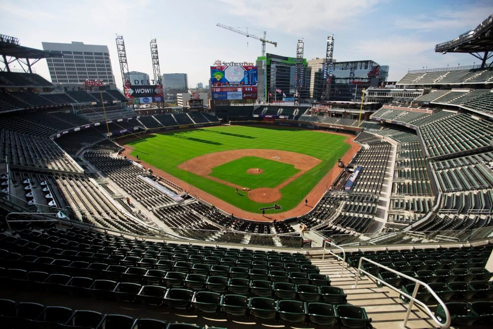

SunTrust Park is the third ballpark the Braves have played in while they've been in Atlanta since 1966. Atlanta Fulton County Stadium was the home of the Braves from 1966 until 1996. Then, Turner Field was erected in 1996 for the Atlanta Olympics Games, and the Braves called this stadium their home from 1997 until 2016. Finally, we have the third rendition of Atlanta Braves baseball coming to SunTrust Park this year in 2017. They say the third time is the charm, so let's hope this ballpark brings our team some luck. Below is an image of the recently finished SunTrust Park in Northwest Atlanta.
As you can see above, SunTrust Park looks a good bit like the former stadium, Turner Field, but there are several differences between the two ballparks. Below is a table comparing Turner Field and SunTrust Park.
| Turner Field | SunTrust Park | |
| Capacity | 49,586 | 41,000 |
| Location | Downtown ATL | Smyrna |
| Year Built | 1996 | 2017 |
| Parking Spaces | 8,500 | 14,000 |
| Scoreboard(ft) | 71x78 | 64x121 |
Below, we have a list of the first 5 Home Series the Braves will play in Suntrust Park. Some of these games have already been played, and therefore have results next to them.
In the first four games at SunTrust Park against the San Diego Padres, the Atlanta Braves drew a total of 143,961 people. This comes out to an average of 35,990 per game. The first two games sold out entirely, while the final two games drew respectable crowds as well. Overall, people are turning out in good numbers to see this 2017 Atlanta Braves team play and to check out some of the cool features of the new ballpark. Below is a list of some of the interesting new features and ammenities SunTrust Park brings to the table.
- an adjacent 1.5 million-square-foot mixed-use development, The Battery Atlanta, which includes several restaurants, shops, and music venues
- a fountain in center field that shoots water 50 feet into the air after a Braves home run!
- a larger, three level Chop House in right field that is now sponsored by Coors Lite
- all seats are closer to the field than previous braves stadiums, and they are also now green in color
- a Hank Aaron Statue in Monument Garden recognizing the true Home Run King
- Hope and Will's Sandlot: a large, kid friendly area that has a zip-line and several baseball activites
- park is conveniently located in Smyrna, GA. No more fighting thru the chaos of Downtown Atlanta
SunTrust Park has a ton to offer and appears to be the perfect home for our Atlanta Braves. So far, things have been running smoothly and traffic around the stadium has not been nearly as bad as folks once predicted. Here's to a fantastic season for our Atlanta Braves and many years of success in Braves Country's new hub, SunTrust Park. *Be sure to check out the links at the top of the page for Braves tickets, history, and schedule.